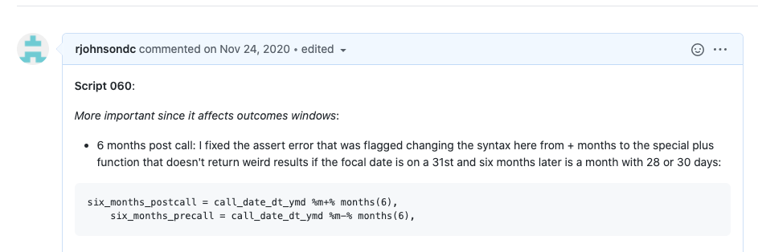
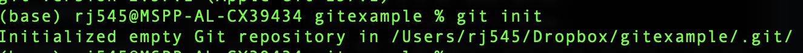

Set of command line tools for version control (aka avoid finalfinal, finalrealthistime, etc.)
``Distributed,’’ or means that files/code, rather than only stored one place centrally, can be stored on all collaborators’ machines
What is GitHub?
Web-based repository for code that utilizes version control system (VCS) for tracking changes
Has additional features useful for collaboration, some of which we’ll review today (repos; issues; push/pulling recent changes) and others of which we’ll review as the course progresses (branches; pull requests)
Why GitHub rather than Dropbox/Google Drive?
Explicit features that help with simultaneous editing of the same file
Public-facing record, or a portfolio of code/work (if you make it public)
Ways to comment on and have discussions about code specifically through the interface
GitHub has file size limits (though can pay to override these)
Sensitive data should generally not be put in a repo, even if the repo is private since employees at the company have access to private repo content
Instead, read directly directly from its source or have download instructions
Ingredients of a repo: issues
Can assign to specific collaborators or leave as a “note to self” to look back at something
Can use checklist features
Can include code excerpts
Easy to link to a specific commit (change to code)
Need to be logged into GitHub to write

General steps in workflow
Either create a repository locally and link to GitHub OR create a repository on GitHub and clone
Make changes to code or other files
Add changes: tells the computer to move changes to a temporary staging area
Commit changes: tells the computer to ``save’’ those staged changes, taking a permanent snapshot of what the changes are
Push changes: tells the computer to push those saved changes to GitHub (if file exists already, will overwrite file, but all previous versions of that file are accessible/retrievable)
Step one: two paths to getting started
Create a repository locally and then link it to GitHub: use when you have an existing folder/set of files and you want to move it to git/GitHub-based version control
Create a repository on GitHub and then create a linked copy locally: my preferred way when starting a new project; what you’ll do for problem sets
Step one path one: linking a local directory to git/GitHub
Create an empty directory called gitexample
# check where you arepwd # create dirmkdir gitexample# change cdcd gitexample
Check if you have a git
git --version
Start a repository within gitexample
git init
What you should see after git init

Modify the contents of the directory by adding an (empty) README
touch README.md
List files to make sure it was added
ls
Step one path one: linking a local directory to git/GitHub
Three steps:
git add: prepares the changes you made locally to be “sent up” to the repository. Can repeat many times as you work.
git commit: permanently saves those changes to your local history but doesn’t yet send them to the remote repository for permanent record
git push: uploads the changes you made locally to the remote repository
Commit changes: tells the computer to ``save’’ the changes
Push changes: tells the computer to push those saved changes to GitHub (if file exists already, will overwrite file, but all previous versions of that file are accessible/retrievable)
Cloning a repo
Open your local terminal and navigate to where you want the repo’s files to be stored
Go to GitHub.com and create the repo; recommend include a README and a Python .gitignore file
Go to the green “Code” button to find the name of the repo
In your terminal, use the following command to clone
Within your ppol5203_f26_activities repo, make a change locally (e.g., adding a comment to the code)
Try pushing (add, commit, push) the changes
If you edited the README remotely, you likely get an error that updates were rejected before the remote contains work that you do not have locally
How to address: ALWAYS pull before making local changes
git pull
Either: - There are no merge conflicts with the pull (the things you edited locally don’t conflict with what you edited on the GitHub website) -> you can proceed with git push - There are merge conflicts with the pull
What to do in the case of merge conflicts
Open your text editor and navigate to the file that has merge conflicts (can use vim or other command line editor)
Solve the conflict and delete the conflict markers
Stage your changes (git add)
Commit your changes (git commit)
Activity 2
See Activity 2 in your notebook
Activity 3
Cloning the repo that contains your problem set and walking through